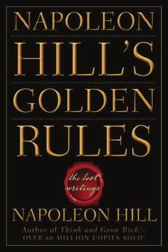

NHMuvaffaqiyatga erishishning asosiy qoidalari va psixologik tamoyillari haqida amaliy qo'llanma.
Ushbu kitob Napoleon Hillning ilgari nashr etilmagan yozuvlarini o'z ichiga oladi va muvaffaqiyatga erishishning asosiy qoidalari hamda psixologik tamoyillarini yoritib beradi. Muallif o'z-o'zini rivojlantirish, ijobiy fikrlash va insoniy munosabatlar orqali maqsadlarga erishish yo'llarini amaliy darslar orqali tushuntiradi.